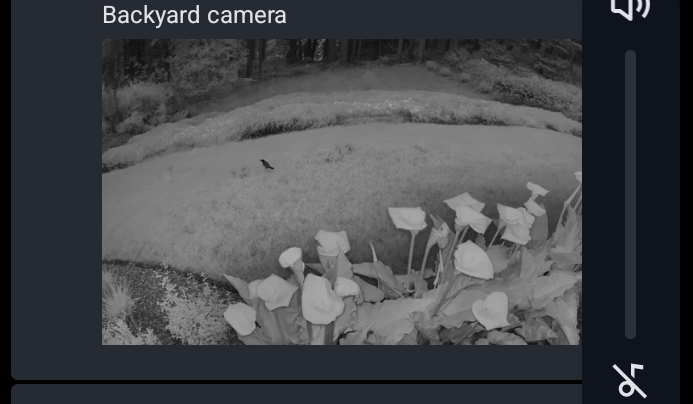

02 June 2026
Rejected Shakespeare: Once more unto the breach, motherfuckers, once more!

03 June 2026
genx shakespeare: to be, or not to be, that is the question. whatever.
05 June 2026
Rode to the valley. Felt warm rain for the first time in years. Bliss. #itsGettingBoringByTheSea
07 June 2026
There's something unnerving about a bird chilling in your yard at two in the morning . . .

08 June 2026
Worked on the site's accessibility. Think I did better? Possibly?
WAVE says better. AccessiblityChecker says better. Skynet says I suck, but why would I believe them when they're just going to unleash terminators upon the world and destroy us all? They can't fool me. Terminators don't care about accessibility.